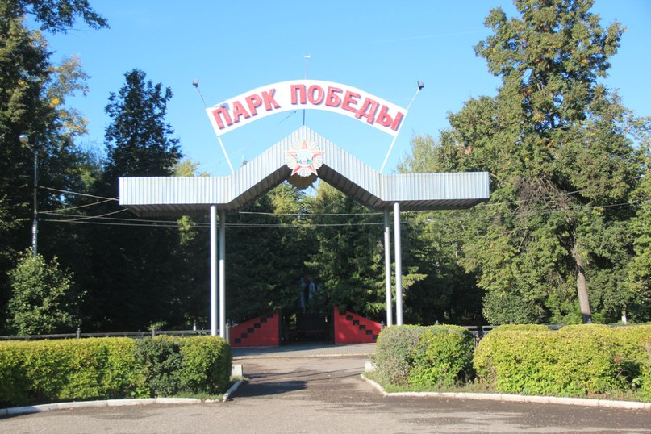

Места нашей области, посвящённые Великой Победе
 Домой
Домой
Мемориальный комплекс в Парке Победы (Данков)
8 мая 2010 года в Данкове состоялось открытие мемориального комплекса, в составе которого 11 мемориальных досок Героям Советского Союза и 2 мемориальные доски полным кавалерам Ордена Славы – уроженцам Данковского района.
Мемориальный комплекс состоит из трёх основных частей. Первая – это памятник воинам-освободителям , который к 65-летнию Победы отреставрировали: оштукатурили, подкрасили и облицевали чёрным гранитом и мрамором. Вторая часть – это обустроенная рядом с памятником площадка: её уложили тротуарной плиткой. И наконец, собственно мемориальные доски – их вмонтировали в обложенные красным гранитом «крылья» памятника. На плитах нанесли имена и фамилии Героев, и украсили каждую надпись золотой веточкой. К 9 мая облагородили всю площадку вокруг комплекса в парке Победы: разбили цветники, уложили 270 квадратных метров тротуарной плитки.
Изображения:
